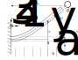

Reconfiguration cantilever beam example
In this tutorial, a cantilever beam submitted to a flow producing drag forces is considered. The main goal is to validate the drag forces computation considering reconfiguration in a problem with large displacements. The example is based on one of the problems considered in this reference, where a reference solution is presented and validated with experimental data. The reference solution was generated with the code publicly available in this repository
The problem consists in a cantilever beam submitted to a fluid flow with uniform velocity $v_a$($x$,$t$) = $v_a$(t) $c_2$, as shown int he Figure bellow. The beam is clamped on the boundary at $x=0$ m, and the span length is $L$. The cross-section of the beam is circular with diameter $d$. For the material of the beam a linear elastic isotropic model is considered, with Young modulus $E$ density $\rho$.
Dimensionless analysis
The problem can be studied through the following dimensionless numbers:
\[ c_y = \frac{\rho_f L^3 v_a^2}{16 E I_{zz}}, \qquad \mathcal{R} = \frac{F}{\frac{1}{2}\rho_f L d c_d v_a^2}\]
where $F$ is the global drag force towards $c_2$, $c_y$ is the Cauchy number that describes the ratio between the stiffness of the beam and the flow load and the reconfiguration number $\mathcal{R}$ reflects the geometric nonlinear effect by dividing the drag of the flexible beam to that of a rigid one of the same geometry
Numerical solution
Before defining the structs, the workspace is cleaned and the ONSAS directory is added:
close all, if ~strcmp( getenv('TESTS_RUN'), 'yes'), clear all, end
addpath( genpath( [ pwd '/../../src'] ) ); The problem parameters are loaded:
[L, d, Izz, E, nu, rhoS, rhoF, nuF, ~, NR, cycd_vec, uydot_vec ] = loadParametersCirc();where $\rho_f$ and $\rho_s$ are the fluid and solid densities respectively, $\nu$ is the fluid kinematic viscosity, and $NR$ is the number of load steps (or velocity cases solved):
The number of elements employed to discretize the beam is:
numElements = 10 ;MEBI parameters
materials
Since the example contains only one material and co-rotational strain element so then materials struct is:
materials = struct() ;
materials.hyperElasModel = '1DrotEngStrain' ;
materials.hyperElasParams = [ E nu ] ;
materials.density = rhoS ;elements
Two different types of elements are considered, node and frames. The nodes will be assigned in the first entry (index $1$) and the beam at the index $2$. The elemType field is then:
elements(1).elemType = 'node' ;
elements(2).elemType = 'frame' ;for the geometries, the node has not geometry to assign (empty array), and frame elements will be set as a circular section with $d$ diameter.
elements(2).elemCrossSecParams{1,1} = 'circle' ;
elements(2).elemCrossSecParams{2,1} = [ d ] ;where the aerodynamic coefficents and the chord vector are set by default for 'circle' cross sections type. For the validation case a constant drag coefficients c_d =1.2" is used, this is defined in the 'dragCircular' function:
elements(2).dragCoefFunction = 'dragCircular' ;The geometrical non-linear effects and the aerodynamic stiffness matrix are considered in this case to compute the aerodynamic force vector:
elements(2).aeroNumericalParams = {4, true, true} ;boundaryConds
Only one welded (6 degrees of freedom are set to zero) boundary condition (BC) is considered:
boundaryConds = struct() ;
boundaryConds(1).imposDispDofs = [ 1 2 3 4 5 6 ] ;
boundaryConds(1).imposDispVals = [ 0 0 0 0 0 0 ] ;initial Conditions
Any non-homogeneous initial condition (IC) are set for this case, then an empty struct is used:
initialConds = struct() ;mesh parameters
The coordinates of the mesh nodes are given by the matrix:
mesh = struct() ;
mesh.nodesCoords = [ (0:(numElements))' * L/numElements zeros(numElements+1,2) ] ;The connectivity is introduced using the conecCell. Each entry of the cell contains a vector with the four indexes of the MEBI parameters, followed by the indexes of nodes that compose the element (node connectivity). For didactical purposes each element entry is commented. First the cell is initialized:
mesh.conecCell = { } ;then the first welded node is defined with material (M) zero since nodes don't have material, the first element (E) type (the first entry of the elements struct), and (B) is the first entry of the the boundaryConds struct. Finally the node is assigned:
mesh.conecCell{ 1, 1 } = [ 0 1 1 1 ] ;Next the frame elements MEB parameters are set. The frame material is the first material of materials struct, then $1$ is assigned. The second entry of the elements struct correspond to the frame element employed, so $2$ is set. Finally no BC is required for this element, then $0$ is used. Consecutive nodes build the element so then the mesh.conecCell is:
for i=1:numElements,
mesh.conecCell{ i+1,1 } = [ 1 2 0 i i+1 ] ;
endanalysisSettings
The fluid properties are set into fluidProps field into analysisSettings struct. In this field the fluid velocity, viscosity and density are defined, This will apply a external fluid loads according to the quasi-steady theory for each element with aerodynamic coefficients fields into the elements struct. The name of the fluid velocity function located on the same example path is introduced as a string 'windVelCircStatic':
analysisSettings = struct() ;
analysisSettings.fluidProps = {rhoF; nuF; 'windVelCircStatic'} ;since this problem is static, then a N-R method is employed. The time step deltaT is 1 since the time here is an index in the fluid velocity vector uydot_vec untile the length of this vector NR is reached:
analysisSettings.deltaT = 1 ;
analysisSettings.finalTime = NR ;
analysisSettings.methodName = 'newtonRaphson' ;Next the maximum number of iterations per load(time) step, the residual force and the displacements tolerances are set to (if null tolerance is set the criterion is not considered):
analysisSettings.stopTolDeltau = 0 ;
analysisSettings.stopTolForces = 1e-8 ;
analysisSettings.stopTolIts = 50 ;otherParams
The name of the problem and vtk format output are selected:
otherParams = struct();
otherParams.problemName = 'staticReconfigurationCircleUserDefinedDrag';
otherParams.plots_format = 'vtk' ;Case 1: validation case with constant $c_d = 1.2$
The ONSAS software is executed for the parameters above defined and the displacement solution of each load(time) step is saved in matUsCase1matrix:
The reaction forces at $x=0$ are stored in the following vector and declaring a global variable:
global globalReactionForces
globalReactionForces = zeros(6*analysisSettings.finalTime, 1) ;The node index where the reaction forces are computed is:
global glboalNodeReactionForces
glboalNodeReactionForces = 1 ;Numeric solution
[matUsCase1] = ONSAS( materials, elements, boundaryConds, initialConds, mesh, analysisSettings, otherParams ) ;Verification
The numerical solution is extracted. First the reference coordinaes
xref = mesh.nodesCoords(:,1) ;
yref = mesh.nodesCoords(:,2) ;
zref = mesh.nodesCoords(:,3) ;Then the values of $R$ and $C_y C_d$ are computed :
numLoadSteps = size(matUsCase1, 2) ;
timeVec = linspace(0,analysisSettings.finalTime, numLoadSteps) ;
% initialize vectors
Cy = zeros(numLoadSteps-1, 1) ;
R = zeros(numLoadSteps-1, 1) ;
C_d = feval( elements(2).dragCoefFunction, 0 , 0) ;
% fill them
for windVelStep = 1:numLoadSteps - 1
% Compute dimensionless magnitudes
windVel = feval( analysisSettings.fluidProps{3,:}, 0, timeVec(windVelStep + 1 ) ) ;
normWindVel = norm( windVel ) ;
dirWindVel = windVel / normWindVel ;
Cy(windVelStep) = 1/2 * rhoF * normWindVel^2 * (L)^3 *d / (E*Izz) ;
% numeric drag
FReaction = globalReactionForces((windVelStep-1)*6 + 1: windVelStep*6) ;
FDragi = FReaction(3) ;
FDRef = 1/2 * rhoF * normWindVel^2 * C_d * d * L ;
R(windVelStep) = abs(FDragi)/(FDRef ) ;
endGosselin et.Al 2010 solution
% resudrag (cycd, R) and def wich contains de deformed configuration for 10^i cycyd values:
base_dir='';
if strcmp( getenv('TESTS_RUN'),'yes') && isfolder('examples'),
base_dir=['.' filesep 'examples' filesep 'dragBeamReconfiguration' filesep];
end
load( [base_dir 'Gosselin2010_data.mat'], 'def', 'resudrag')Validation plots
The plot parameters are:
lw = 4 ; ms = 8 ;
axislw = 1 ; axisFontSize = 20 ; legendFontSize = 15 ; curveFontSize = 15 ;
Gline = 'k-'; ONSASline = 'bo' ; ONSASlineBuiltInDrag = 'rx' ;
folderPathFigs = './output/figs/' ;
mkdir(folderPathFigs) ;The modified Cauchy number vs R is plotted:
fig1 = figure(1) ;
loglog(C_d*Cy , R , ONSASline , 'linewidth', lw, 'markersize', ms ) ;
hold on
loglog(resudrag(:,1), resudrag(:,2) , Gline , 'linewidth', lw, 'markersize', ms ) ;
% add legend
legend('ONSAS', 'Gosselin2010')
% set labels legend
labx=xlabel(' c_y*c_d '); laby=ylabel('R');
set(legend, 'linewidth', axislw, 'fontsize', legendFontSize, 'location','eastOutside' ) ;
% set fonts
set(gca, 'linewidth', axislw, 'fontsize', curveFontSize ) ;
set(labx, 'FontSize', axisFontSize); set(laby, 'FontSize', axisFontSize) ;
grid on
if length(getenv('TESTS_RUN')) > 0 && strcmp( getenv('TESTS_RUN'), 'yes')
fprintf('\ngenerating output png for docs.\n')
figure(1)
print('output/RvsCyCd.png','-dpng')
else
fprintf('\n === NOT in docs workflow. ===\n')
endDeformed configurations for different cauchy numbers
fig3 = figure(3) ;
hold on
% plot reference configuration
plot(xref, yref , 'k--' , 'linewidth', lw, 'markersize', ms );
% add ficitcius plots for the legend
plot(0, 0, ONSASline , 'linewidth', lw, 'markersize', ms );
plot(0, 0, ONSASlineBuiltInDrag , 'linewidth', lw, 'markersize', ms );
% plot deformed configurations for different fluid load steps
for nr = 1:analysisSettings.finalTime
% Numerical deformed coordinates solution
xdef = xref + matUsCase1(1:6:end,nr+1) ;
ydef = yref + matUsCase1(3:6:end,nr+1) ;
zdef = zref + matUsCase1(5:6:end,nr+1) ;
thetaXdef = matUsCase1(2:6:end,nr+1) ;
thetaYdef = matUsCase1(4:6:end,nr+1) ;
thetaZdef = matUsCase1(6:6:end,nr+1) ;
% Gosselin deformed coordinates solution
xdefG = def(1,:,nr) ;
ydefG = -def(2,:,nr) ;
% Plot
plot(xdef , ydef, ONSASline, 'linewidth', lw, 'markersize', ms );
plot(xdefG, ydefG, Gline , 'linewidth', lw, 'markersize', ms );
endVerification boolean
% The verification boolean is computed as for the deformed configurations and the cycd curve
% deformed coordinates dif norm
vecDifDeform = [ norm( ydef - ydefG(1:numElements*10:end)') ;...
norm( xdef - xdefG(1:numElements*10:end)') ] ;
% verification boolean deformed
verifBooleanDef = vecDifDeform <= 2e-2 * L ;
% cycd vs R verification boolean is:
verifBooleanR = abs(R(end) - resudrag(end,2) ) < 5e-3 ;
% The example verifboolean is:
verifBoolean = verifBooleanR && all(verifBooleanDef)Case 2: case with drag coefficient formula proposed in this reference
Once _elemCrossSecParams_ is defined in the elements struct then the drag lift and pitch moment are defined with bluit-in functions. As consequence if we want to use the default drag coefficient the dragCoefFunction field must be set:
elements(2).dragCoefFunction = [];moreover the drag formulation in this reference is valid with $Re < 2$ x $10^5$. Then the final load step, which is equivalent to the index in the velocity vector uydot_vec, is set to 5:
analysisSettings.finalTime = NR - 2 ;otherParams
The name of the problem and vtk format output are selected:
otherParams = struct();
otherParams.problemName = 'staticReconfigurationCircleBuiltInDrag';Numeric solution
[matUsCase2] = ONSAS( materials, elements, boundaryConds, initialConds, mesh, analysisSettings, otherParams ) ;Deformed configurations for different cauchy numbers
for nr = 1:analysisSettings.finalTime
% Numerical deformed coordinates solution
xdefCase2 = xref + matUsCase2(1:6:end,nr+1) ;
ydefCase2 = yref + matUsCase2(3:6:end,nr+1) ;
zdefCase2 = zref + matUsCase2(5:6:end,nr+1) ;
thetaXdefCase2 = matUsCase2(2:6:end,nr+1) ;
thetaYdefCase2 = matUsCase2(4:6:end,nr+1) ;
thetaZdefCase2 = matUsCase2(6:6:end,nr+1) ;
% Plot
plot(xdefCase2 , ydefCase2, ONSASlineBuiltInDrag, 'linewidth', lw, 'markersize', ms );
end
% add legend
legend('Gosselin2010(cd = 1.2)', 'ONSAS(cd = 1.2)','ONSAS(Built-in c_d)')
% add legends and labels
labx=xlabel('x [m]'); laby=ylabel('y [m]');
% set fonts
set(legend, 'linewidth', axislw, 'fontsize', legendFontSize, 'location','eastOutside' ) ;
set(gca, 'linewidth', axislw, 'fontsize', curveFontSize ) ;
set(labx, 'FontSize', axisFontSize); set(laby, 'FontSize', axisFontSize) ;
grid on
axis equal
% save fig
namefig3 = strcat(folderPathFigs, 'xy.png') ;
if length(getenv('TESTS_RUN')) > 0 && strcmp( getenv('TESTS_RUN'), 'yes')
fprintf('\ngenerating output png for docs.\n')
figure(3)
print('output/defPlots.png','-dpng')
else
fprintf('\n === NOT in docs workflow. ===\n')
end